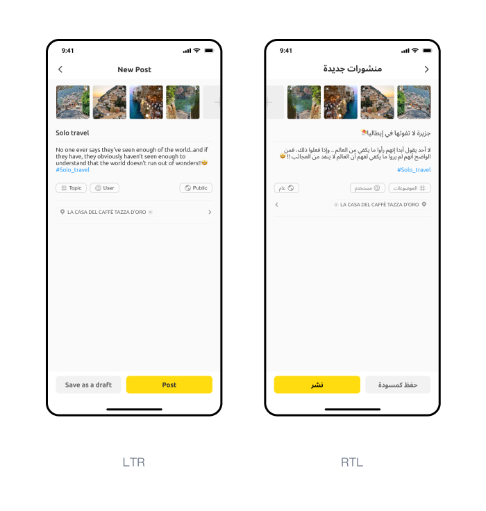
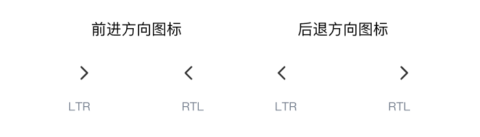
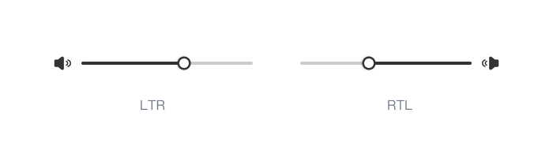
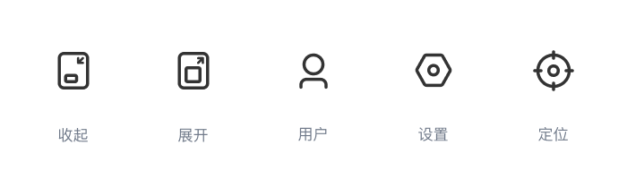

RTL在Hekatr中应用规则
1、背景
Hektar做为一款出海到阿拉伯地区的社区产品，做好RTL适配是必不可少的工作。 作为面向阿拉伯地区的产品应当正确适配LTR和 RTL 语言，以确保信息清晰准确的传递保证不同地区用户的使用体验。
首先理清一个概念，什么是RTL？ Right-to-left (RTL），从右向左的阅读顺序，既然有RTL，Left- to- Right（LTR）同理就是我们常见的从左向右的阅读顺序。
LTR常见的语言有，汉语、日语、英语等。 RTL常见的语言有，阿语、波斯语、乌尔都语等。
上述说到的RTL适配是指将用户界面从 LTR 到 RTL 的适配过程（反之）则称为镜像。
2、适配原则
RTL 布局是 LTR 布局的镜像，它会影响布局、文本和图形。
元素布局
在RTL语言环境下，用户界面的布局需要整体进行镜像处理。例如：原本左对齐显示的文本，需要切换为右对齐显示，原本左侧的按钮需要放置于右侧。 交互操作
针对交互操作需要重点关注的是滑动方向，例如：tab的左右滑动切换。图标RTL原则
图标在界面设计中使用十分广泛，有4种情况需要进行RTL适配。- 表示前进与后退的图标
 - 传达特定运动方向性的图标

- 音量图标带有滑块的组件
 - 表示文本的图标
- 表示前进与后退的图标
不需要镜像的图标
- 不传递方向的图标
 - 惯用手持物品或者表示时间

- 不传递方向的图标
文本RTL原则
- 文本应始终以其所用语言的正确方向显示，段落中有单独LTR文字段的，LTR部分保持左对齐，保留用户的文字阅读习惯。
参考文献：
https://material.io/design/usability/bidirectionality.html https://developer.apple.com/design/human-interface-guidelines/foundations/right-to-left